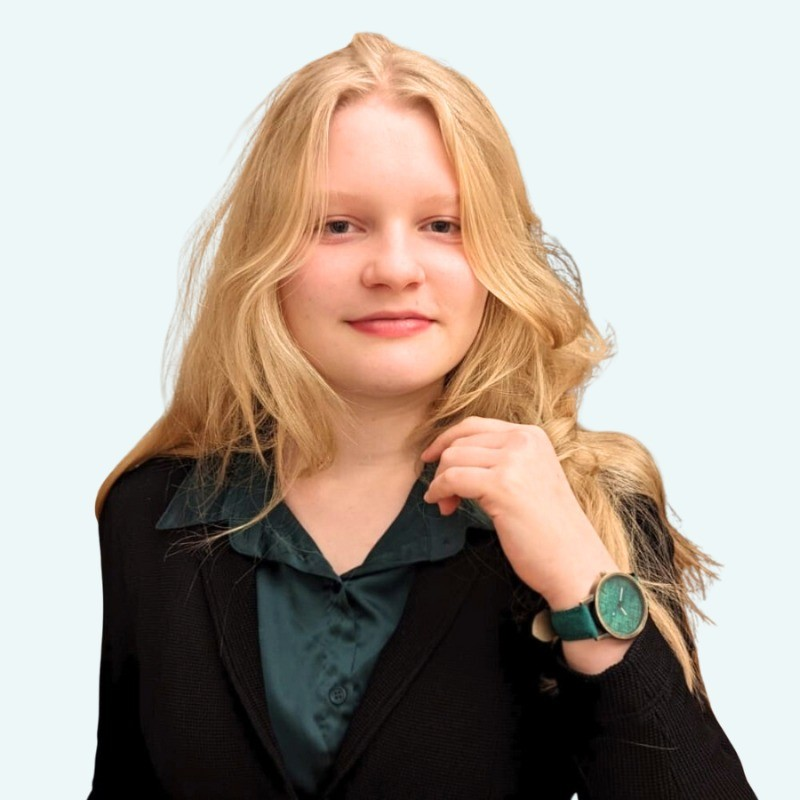

Build real apps with AI
Turn ideas into software using plain language. It’s called vibe coding — and you won't need to write a single line of code.
Coding used to be the barrier to building the tools you want. It isn’t anymore.
Regardless of your major, learn to design and deploy AI agents that do real work — and graduate as the problem-solver every employer is hunting for.
Applications close September 18
Item 1 of 5: the film
Futures Lab is an 8-week, hands-on workshop at the University of Waterloo, run with Google.
It’s built on a simple idea: anyone can build with AI — no code or AI experience needed, just curiosity and a willingness to break things. You’ll work in a small, interdisciplinary team, move fast, test your ideas on real people, and leave with a working AI project on your CV.
Turn ideas into software using plain language. It’s called vibe coding — and you won't need to write a single line of code.
Design agents that handle complex, multi-step workflows autonomously — real automation, not just another chatbot.
Build a working AI product to demo in interviews and showcase in your portfolio.
Your team is mentored by people from Google to refine your ideas into a high-impact product.
Scope real problems, weigh trade-offs, and make key decisions that turn ideas into viable products.
Run usability tests, gather user feedback, and iterate using proven research loops.
Pitch your ideas with clarity and confidence to convince teammates, users, and executives alike.
Present your final product to leaders from Google, industry, and NGOs. In past iterations, we’ve hosted it at Google’s Kitchener office.
I just finished my recruiting cycle for co-op jobs, and I had seven interviews — and in all seven I was able to talk about Futures Lab. Employers were looking for someone who could demonstrably say: ‘Here’s something I built with AI. Here’s how it works. I understand how to do this in a team setting.’

Erin Walshaw
BMath, Computer Science
Built Logic Labyrinth
I have no clue how to code, and yet I came up with a fully functional app — because I was smart with giving prompts.
Lara Azad
Master of Digital Experience Innovation
I show off to all my friends that I know how to do this now — none of them do. I want to go into marketing in health, and now I can build a portfolio on my own instead of using Canva.
Madison De Silva
BA, Sociology
Built Focus Flow
6 in 10
built their first app here
97
students trained, and counting
50+
Net Promoter Score
30+
prototypes shipped
Every faculty in the room
…and more — Alumni from +32 programs
Every level, side by side.
Come as you are — from computer science to horticulture, first-year to PhD.
We’re looking for creative, high-agency people who want to build the tools for the future of work and learning — from any program, at any level. No experience with coding or AI is required — and it won’t give you an advantage, either. We just want to get to know you.
Show us your trajectory. What you're curious about, what you've built or led, the things you throw yourself into. Tell us about your studies, your work or co-op experience, your extracurriculars and hobbies, and take on a few open questions. We're looking for creativity, drive, and proof that you make things happen.
Applications close September 18
The University of Waterloo and Google are expanding Futures Lab to institutions everywhere. We’re inviting universities to bring the program to their own students.
Pre-register your institutionNo commitment — we’ll be in touch as new cohorts open